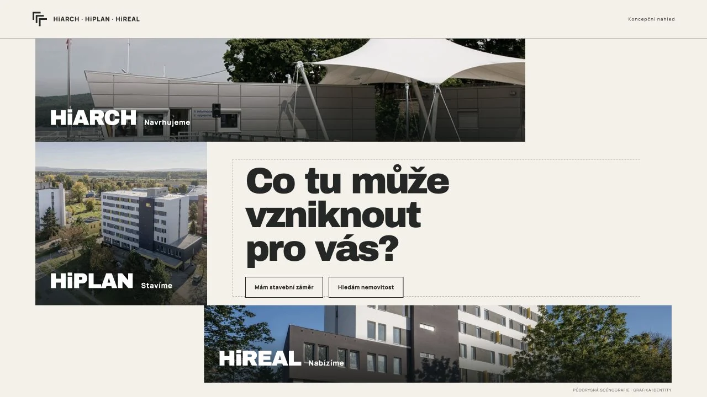
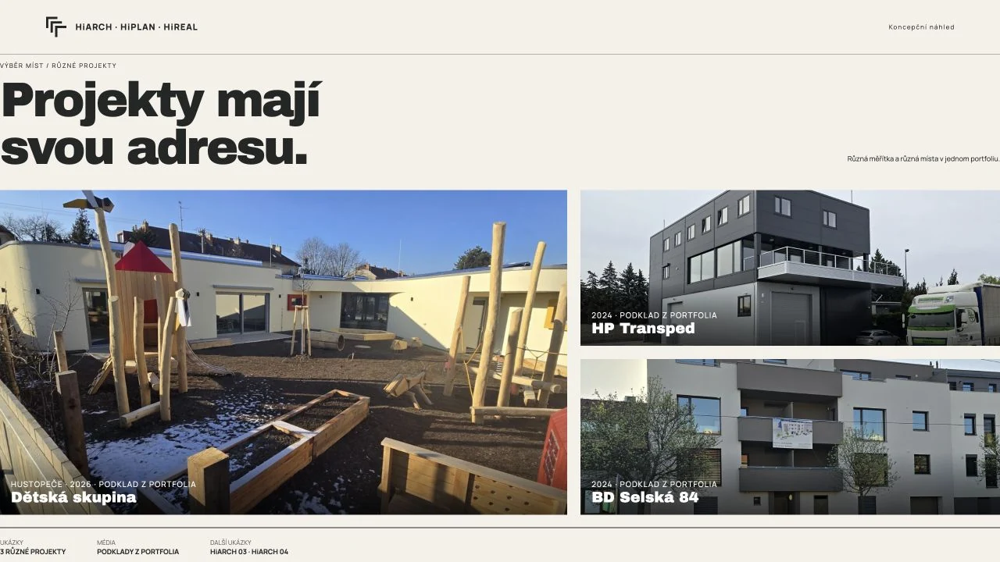
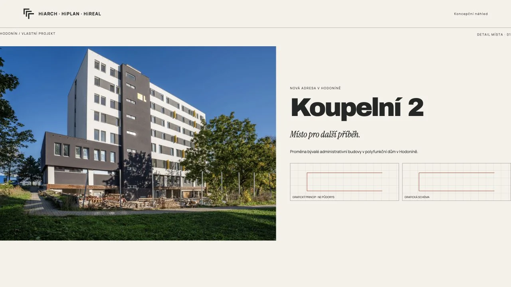

A / DŮM S OTEVŘENÝM DVOREMDům s otevřeným
Dům s otevřeným
dvorem.
Tři propojená fotografická křídla skládají půdorysný dvůr. Záměr, realizace a nabídka obklopí volbu návštěvníka.
Přínos — okamžitě propojí návrh s výsledkem.
Otevřít velký náhled ↗DŮM S OTEVŘENÝM DVOREM · ZKOUŠKA PRINCIPU VYZKOUŠET ↗


